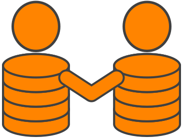

Conference AgentDynamic academic conference database with a focus on artificial intelligence, medicine, and genomics. Keep track of submission deadlines with calendar events and email reminders.
Don't see your conference? Add it here.
To check out the command-line interface or contribute to this open-source repository, visit the GitHub Repository. Privacy.
Add to your calendar
Subscribe to keep the events up to date when deadlines or dates change.
Or download a copy that will not update: